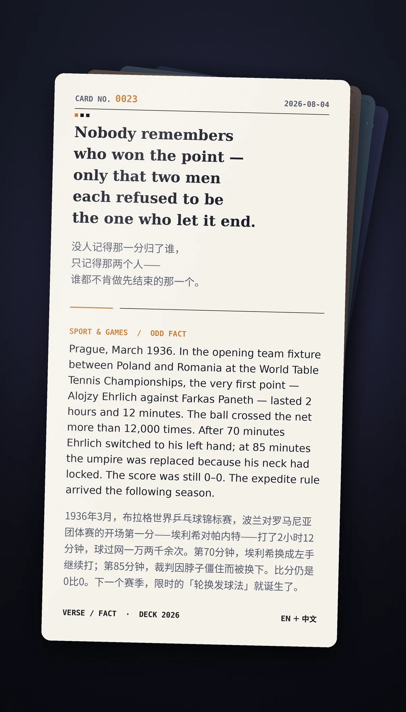

Nobody remembers who won the point — only that two men each refused to be the one who let it end.（没人记得那一分归了谁，只记得那两个人——谁都不肯做先结束的那一个。）
Prague, March 1936. In the opening team fixture between Poland and Romania at the World Table Tennis Championships, the very first point — Alojzy Ehrlich against Farkas Paneth — lasted 2 hours and 12 minutes. The ball crossed the net more than 12,000 times. After 70 minutes Ehrlich switched to his left hand; at 85 minutes the umpire was replaced because his neck had locked. The score was still 0–0. The expedite rule arrived the following season.（1936年3月，布拉格世界乒乓球锦标赛，波兰对罗马尼亚团体赛的开场第一分——埃利希对帕内特——打了2小时12分钟，球过网一万两千余次。第70分钟，埃利希换成左手继续打；第85分钟，裁判因脖子僵住而被换下。比分仍是0比0。下一个赛季，限时的「轮换发球法」就诞生了。）